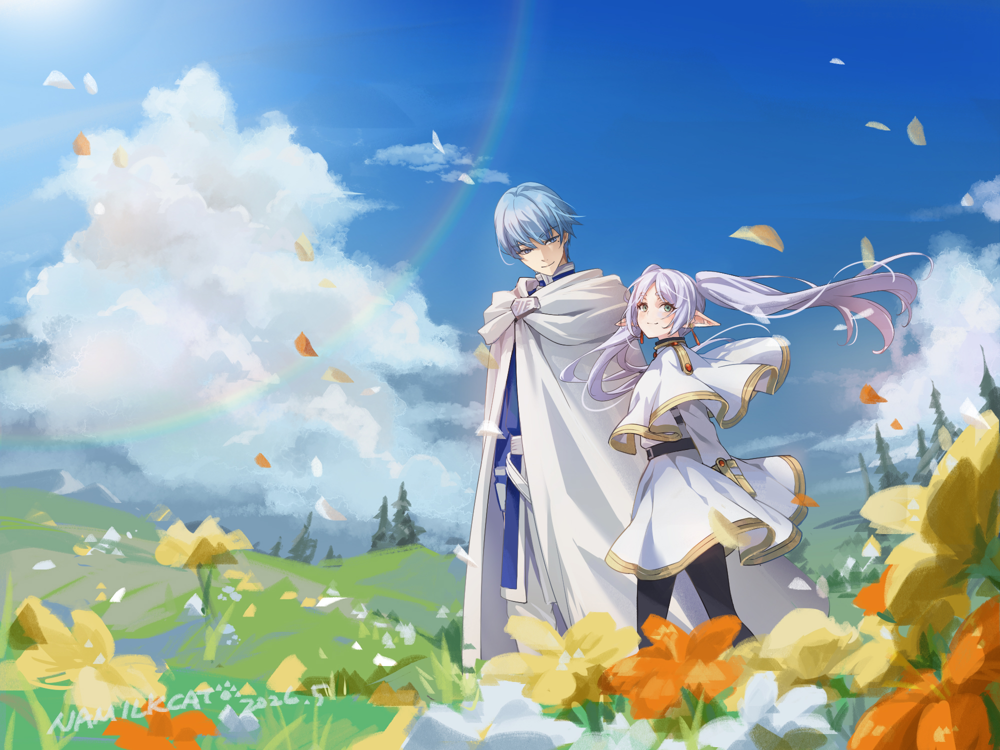
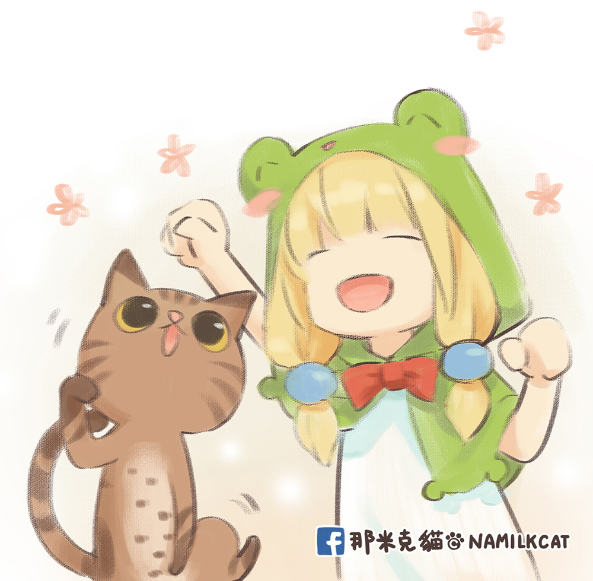
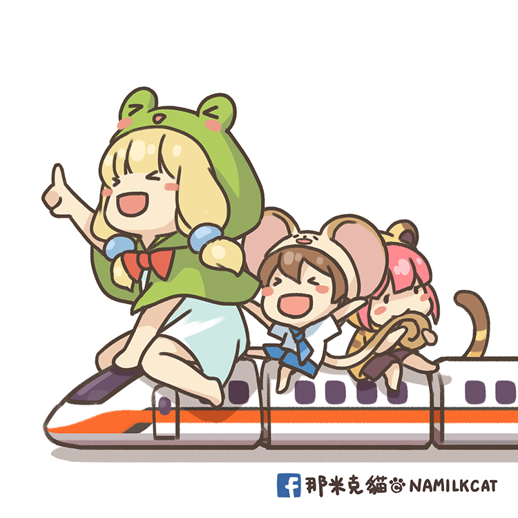

放上你的主視覺把喜歡的一張代表作
存成 images/hero.jpg
放進 images 資料夾即可自動顯示
存成 images/hero.jpg
放進 images 資料夾即可自動顯示
Welcome to my
Portfolio
IllustratorGame Artist
用畫筆紀錄靈感，創造無限可能。
歡迎瀏覽我的插畫作品，這裡收錄了我參與執行過的專案。包含角色設計、插畫、練習與想像創作。
SCROLL

放上你的頭像 / 自畫像
images/profile.jpg
images/profile.jpg
關 於 我
About Me
嗨，我是Namilkcat團隊裡的草蛙，一名插畫與遊戲美術工作者，養了一隻暱稱「餅喵」的軟呼呼小貓咪。
我喜歡玩遊戲，也喜歡畫圖。
從遊戲與故事角色的設計、同人創作到商業委託，我享受將腦中的想像轉化為畫面的過程。
擅長電繪與手繪，具備向量繪圖、印前製作與商業美術的實務經驗，也累積了多年遊戲美術與視覺設計相關工作經歷。
目前持續探索插畫、角色設計與視覺創作的各種可能，也期待接觸不同類型的創作與合作！
角色設計插畫CSPPhotoshop平面設計
作 品 集
Selected Works
接 案 資 訊
Commission
歡迎洽談各類插畫與設計案件。
以下是大致的服務範圍與合作流程，實際內容會依需求另行討論。
角色設計
原創角色、遊戲角色與服裝套裝設計，可提供設定稿與立繪。
插畫
遊戲宣傳圖、主視覺、同人與商業插畫、節慶賀圖。
UI．平面設計
遊戲 UI 介面規劃與圖示設計、ICON道具圖樣、美編與排版設計。
Q版與周邊
Q版角色設計與賀圖、LINE貼圖，以及徽章、鑰匙圈、明信片、抱枕等周邊商品設計。
合作流程
01
洽談需求
說明用途、尺寸、參考資料、預算與期限。
02
報價確認
依內容與用途報價，確認時程與條件。
03
草稿
確認構圖與方向。
04
線稿・上色
線稿確認後進行上色。
05
完稿交付
交付完稿檔案。
- 報價依內容、複雜度與用途（個人／商業）而定。
- 修改以草稿與線稿階段為主，完稿後僅接受小幅調整。
- 著作權與授權範圍會在報價時一併約定。
- 來信時請附上：用途、尺寸、參考資料、預算範圍與截止日。

Let's Create Together
如果你對我的作品或經歷感興趣，歡迎與我聯繫。
期待與你一起創造更多可能。
Thank you for viewing my portfolio.